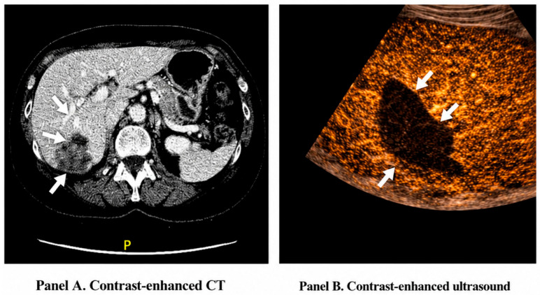
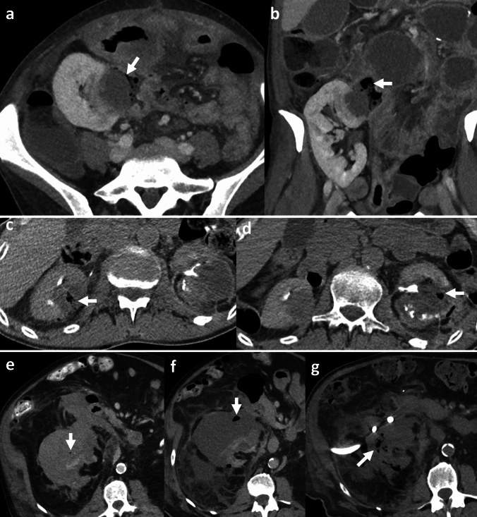
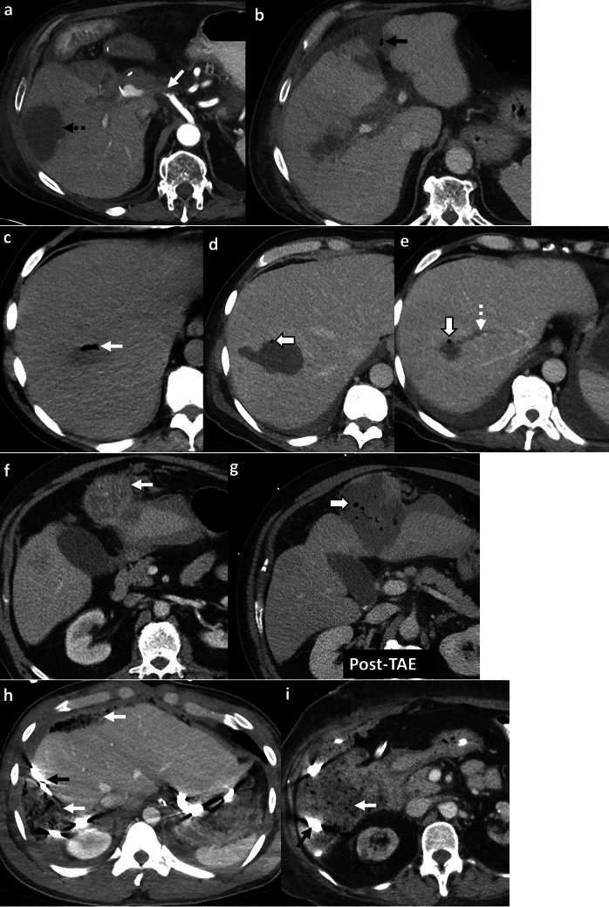

1834 — Hội chứng sau nút mạch: phân biệt viêm lành tính với nhiễm trùng/áp-xe / Post-embolization syndrome vs infection and abscess after transarterial embolization
Tags: pattern:hoi-chung-sau-nut-mach pattern:sot-sau-can-thiep pattern:ap-xe pattern:nhoi-mau pattern:khi-trong-o-hoai-tu vung:gan vung:lach vung:than vung:tu-cung vung:tuy protocol:CT-3-thi protocol:CTA protocol:MRI protocol:sieu-am
Mức chắc chắn (certainty): tổng hợp y văn (literature synthesis) — ghép 1 tổng quan khí bệnh lý ổ bụng có phần post-embolization changes (Abdom Radiol 2026, PMC12830503, CC BY 4.0), 1 tổng quan nhồi máu gan – phân biệt với áp-xe (Healthcare 2026, PMC13410876, CC BY 4.0), 1 tổng quan áp-xe gan sau điều trị tại chỗ (Diagnostics 2025, PMC11817204, CC BY 4.0), 2 đoàn hệ PES sau TACE/TAE (PMC10853204 CC BY 4.0; PMC7903567 CC BY-NC-SA 3.0), 1 meta phân tích dexamethasone (PMC12341330 CC BY-NC-ND 4.0), 1 đoàn hệ PES sau nút mạch tử cung (PMC12012349 CC BY-NC 4.0) và 2 đoàn hệ nhồi máu lách sau nút mạch (PMC13190409 CC BY 4.0; PMC13337838 CC BY 4.0). Không có thử nghiệm ngẫu nhiên nào về ngưỡng chụp CT sau nút mạch → phần "khi nào chụp" là tổng hợp thực hành, không phải khuyến cáo mức cao.
Câu chốt: hội chứng sau nút mạch (post-embolization syndrome, PES) là một phản ứng viêm do hoại tử mô — không phải nhiễm trùng, và khí trong tổn thương vừa nút là bình thường. Hai biến số tách PES khỏi áp-xe không phải hình ảnh mà là thời gian + xu hướng bạch cầu: PES xuất hiện 24–72 giờ (trong tuần đầu), WBC đi xuống; áp-xe thường 1–2 tuần, WBC đi lên, kèm khí tăng dần, ổ đọng có viền ngấm, cấy máu dương. Tỉ lệ PES rất cao (58,9% sau TACE, 72,5% gộp TACE+TAE, 47,8% sau nút mạch tử cung) nên "sốt sau nút mạch" là chuyện thường, còn áp-xe gan chỉ 0,2–6% — trừ khi bệnh nhân đã can thiệp đường mật, lúc đó áp-xe nhảy lên 12–86% và phải dự phòng bằng làm sạch ruột + kháng sinh.
1. Tổng quan bệnh học – cơ chế hình ảnh
1.1 Vì sao nút mạch gây sốt mà không có vi khuẩn
- Chuỗi sự kiện: thiếu máu nuôi → hoại tử đông (coagulative necrosis) mô đích → giải phóng cytokine (IL-6, TNF-α) và sản phẩm thoái giáng tế bào vào tuần hoàn → sốt, đau, buồn nôn, tăng bạch cầu, tăng men gan. Đây là phản ứng viêm vô khuẩn, không phải nhiễm trùng; triệu chứng thường xuất hiện trong 72 giờ đầu sau nút mạch tạng đặc và tự giới hạn (PMC13521999; PMC12830503).
- Vì sao đau: mô hoại tử phù nề trong vỏ bao căng (gan, lách, thận) → kích thích thụ cảm thể bao; đau cùng bên, cùng vùng, không lan kiểu đau tạng.
- Vì sao có khí: sau nút mạch, CT ngay sau thủ thuật có thể thấy khí trong tổn thương đã nút do (1) hoại tử mô sinh hơi và (2) khí đi theo vật liệu nút/dung dịch bơm. Khí này mất dần trên CT theo dõi và không kèm WBC tăng dần (PMC12830503). Cùng cơ chế, sau nút mạch tử cung có thể thấy khí trong cơ tử cung — bình thường.
- Vì sao áp-xe lại khác: ổ hoại tử bị bội nhiễm → vi khuẩn sinh hơi + phản ứng viêm mủ → khí tăng dần, dịch hóa trung tâm, viền ngấm thuốc, WBC tăng dần, cấy máu dương (chỉ 47,6% ca áp-xe gan có cấy máu dương — nên cấy âm không loại trừ) (PMC11817204; PMC13410876).
- Ngưỡng định lượng nằm lòng (bảng dưới) — điểm quan trọng nhất: thời gian và xu hướng WBC, không phải một con số CRP đơn lẻ.
1.2 Ngưỡng định lượng nằm lòng
| Đại lượng | Số liệu | Nguồn |
|---|---|---|
| Thời điểm PES | trong 3 ngày sau can thiệp (định nghĩa nghiên cứu); thực tế 24–72 giờ, trong tuần đầu | PMC10853204; PMC10082639; PMC12830503 |
| Tỉ lệ PES sau TACE | 58,9% (106/180) | PMC10853204 |
| Tỉ lệ PES gộp TACE + TAE | 72,5% (124/171); TACE 74,7% vs TAE 68,7% | PMC7903567 |
| Tỉ lệ PES sau nút mạch tử cung | 47,8% (33/69) "có ý nghĩa lâm sàng" | PMC12012349 |
| PES sau nút mạch lách (kỹ thuật) | mushroom 10,2% (12/118) vs sandwich 37,3% (38/102) | PMC13318778 |
| Yếu tố dự báo PES sau TACE | loại TACE (p = 0,015), mức độ nút mạch (p = 0,008), số u (p = 0,026); C-index 0,713/0,703 | PMC10853204 |
| Yếu tố dự báo PES (TACE/TAE) | nữ OR 2,76 (1,04–7,34); HCC do rượu OR 3,14 (1,42–6,95) | PMC7903567 |
| PES sau nút mạch tử cung | sinh con lần đầu (nulliparity) OR 5,51 (1,30–23,41) | PMC12012349 |
| Thời điểm áp-xe gan sau nút mạch | 1–2 tuần sau thủ thuật | PMC12830503 |
| Áp-xe gan sau điều trị tại chỗ (chung) | 0,2–6% | PMC11817204 |
| Áp-xe gan sau TACE | 0,2–8,8% (8,8% là ngoại lệ DEB-TACE) | PMC11817204 |
| Áp-xe gan khi đã can thiệp đường mật | 10,6–100%; TACE 12–86% | PMC11817204 |
| Tử vong do áp-xe gan | 13,3–50% | PMC11817204 |
| Dự phòng ở nhóm nguy cơ cao | làm sạch ruột + kháng sinh dự phòng: 60% → 0% | PMC11817204 |
| Nhồi máu lách sau nút mạch phình lách | 37,5% (24/64), gắn với vị trí xa/rốn lách (p = 0,007) và thể tích lách lớn (p = 0,018) | PMC13190409 |
| Nhồi máu lách — plug vs coil | 22,7% vs 33,3% (p = 0,046) | PMC13337838 |
| Áp-xe lách sau nút mạch lách | 6/202 (3,0%), 5 ca nút mạch xa (p = 0,092) | PMC13521999 (dẫn nghiên cứu 202 ca) |
| Cấy máu dương trong áp-xe gan | 47,6%; E. coli 52,4% | PMC11817204 |
2. Mẫu hình + chẩn đoán phân biệt theo cơ quan (gamut)
2.1 Gan sau TACE/TARE — "khí trong u đã nút" là bình thường
- Hình ảnh bình thường: khí lấm tấm trong tổn thương đã nút trên CT 1–3 ngày sau thủ thuật, kèm giảm ngấm thuốc do hoại tử u; khí mất dần trên CT sau, WBC bình thường hoặc giảm dần (PMC12830503).
- Áp-xe: khí tăng dần, dịch hóa, viền ngấm, thường 1–2 tuần sau, WBC tăng dần; đau tăng, sốt cao dai dẳng, có thể vàng da/nhiễm khuẩn huyết.
- Nhồi máu gan vô khuẩn: vùng hình nêm/địa lý, giảm ngấm, theo lãnh thổ mạch, không có viền ngấm; CEUS cho thấy vùng không ngấm hoàn toàn, giảm ngấm dai dẳng — không được chọc dẫn lưu chỉ vì có sốt (PMC13410876).

Panel A: CT có cản quang — vùng giảm tỷ trọng hình nêm/địa lý ở hạ phân thúc VII (mũi tên), bờ không viền ngấm; Panel B: CEUS — vùng không ngấm thuốc hoàn toàn, giảm ngấm dai dẳng (mũi tên), xác nhận nhồi máu vô khuẩn chứ không phải ổ mủ. Nguồn: Healthcare 2026 (PMC13410876), Fig. 3 — CC BY 4.0, nguyên bản (giữ nhãn A–B).2.2 Lách sau nút mạch — nhồi máu là "giá phải trả", áp-xe là biến chứng
- Nhồi máu lách gặp 22,7–37,5% tùy chỉ định và thiết bị; đa số không triệu chứng hoặc đau nhẹ, < 33% nhu mô, tự lành; trên CT là vùng hình nêm giảm ngấm ở ngoại vi (PMC13337838; PMC13190409).
- Áp-xe lách chỉ 3,0% (6/202), hay gặp hơn sau nút mạch xa (DSE); hình ảnh ổ dịch viền ngấm ± khí, bệnh nhân sốt cao kéo dài, đau tăng (PMC13521999).
- Điểm cần nhớ: khí trong nhu mô lách đã nút không đồng nghĩa áp-xe; phải xem xu hướng — khí tăng + WBC tăng + ổ dịch hóa mới là nhiễm trùng.
2.3 Thận sau nút mạch — khí sớm bình thường, khí muộn là nhiễm trùng
- Ca minh họa (PMC12830503): nút mạch thận cầm máu; CT 3 ngày sau có vài bọt khí nhỏ (bình thường); CT 6 tuần khí nhiều hơn + thâm nhiễm mỡ quanh thận → nhiễm trùng sinh hơi; phải dẫn lưu, cuối cùng cắt thận; cấy dịch dẫn lưu Pseudomonas aeruginosa.
- Bài học: với tạng đặc, mốc so sánh là CT ngay sau thủ thuật — không có phim mốc thì "khí" không nói được gì.

Nhóm e–h: bệnh nhân nút mạch thận cầm máu tụ quanh thận; (e) 3 ngày: vài bọt khí nhỏ (mũi tên) — bình thường; (f) 6 tuần: khí nhiều hơn + thâm nhiễm mỡ quanh thận → nhiễm trùng sinh hơi; (g) 3 tháng sau dẫn lưu: khí và viêm quanh thận vẫn tiếp diễn → phải cắt thận. Nguồn: Abdom Radiol 2026 (PMC12830503), Fig. 15 — CC BY 4.0, nguyên bản (giữ nhãn e–h).2.4 Tử cung sau nút mạch — PES rất thường, khí trong cơ tử cung là bình thường
- PES "có ý nghĩa lâm sàng" 47,8%: đau vùng chậu, buồn nôn, sốt nhẹ, mệt; sinh con lần đầu làm tăng nguy cơ OR 5,51 (PMC12012349).
- Khí trong cơ tử cung/u xơ sau nút mạch là thay đổi mong đợi; triệu chứng và hình ảnh tự hết trên theo dõi (PMC12830503).
- Khác biệt với hoại tử sinh hơi tử cung: hoại tử sinh hơi có khí lan ra ngoài tử cung, bệnh cảnh nhiễm trùng huyết, cần cắt tử cung + rửa ổ bụng.
2.5 Ổ hoại tử tụy / sau EUS — nhiễm trùng ổ hoại tử là hàng DDx bắt buộc
- Sau EUS coil + keo (bài 1832), bệnh nhân có thể sốt, đau do PES; nhưng khí trong ổ hoại tử tụy đã có stent hoại tử hoặc can thiệp nội soi là bình thường trong vài ngày đầu (PMC12830503, Fig. 7).
- Nhiễm trùng ổ hoại tử (infected walled-off necrosis): khí tăng dần, ổ to ra, bệnh cảnh nhiễm trùng; chỉ định dẫn lưu/necrosectomy — không chờ.
- Không được nhầm khí do can thiệp với khí do rò tiêu hóa (Fig. 8): rò có khí + dịch chuyển theo tư thế, bệnh nhân đau bụng cấp, nhiễm trùng.
3. Bảng so sánh phân biệt (ma trận đối chiếu)
| Thực thể (entity) | Hình ảnh điển hình | Chốt vào (rule-in) | Chốt loại (rule-out) | Gợi ý xác nhận |
|---|---|---|---|---|
| PES (hội chứng sau nút mạch) | Không có ổ đọng; có thể khí lấm tấm trong tổn thương đã nút; mô hoại tử giảm ngấm | Sốt + đau trong 24–72 giờ + WBC đi xuống + khí không tăng | Khí tăng dần, ổ dịch hóa có viền, WBC tăng → không phải PES | WBC/CRP lặp lại sau 24–48 giờ; CT so với phim ngay sau thủ thuật |
| Áp-xe gan | Ổ dịch viền ngấm ± khí, có thể đa ổ; thường 1–2 tuần sau | Khí tăng + viền ngấm + WBC tăng + cấy máu dương | Ổ hình nêm không viền, khí giảm dần → nhồi máu/PES | CT 3 thì; cấy máu; chọc hút chỉ khi đủ tiêu chuẩn |
| Nhồi máu gan vô khuẩn | Hình nêm/địa lý, giảm ngấm, theo lãnh thổ mạch, không viền | Bờ thẳng theo phân thúc + không viền + CEUS không ngấm | Viền ngấm + khí + sốt dai dẳng → áp-xe | CEUS/MRI; theo dõi, không dẫn lưu |
| Nhồi máu lách | Vùng nêm giảm ngấm ngoại vi, thường < 33% nhu mô | Hình nêm + không khí + đau nhẹ + WBC ổn | Khí trong nhu mô + sốt cao → áp-xe lách | CT có cản quang; theo dõi 4–6 tuần |
| Áp-xe lách | Ổ dịch viền ngấm ± khí, có thể vỡ | Khí + ổ dịch + sốt kéo dài + tăng WBC | Chỉ nhồi máu không khí → không áp-xe | CT; dẫn lưu qua da + cấy |
| Nhiễm trùng ổ hoại tử tụy | Khí tăng dần trong ổ hoại tử, ổ to ra | Khí tăng + bệnh cảnh nhiễm trùng + ổ lớn dần | Khí ổn định vài ngày sau can thiệp → thay đổi sau thủ thuật | CT so phim cũ; dẫn lưu/necrosectomy |
| Khí do thủ thuật (không nhiễm) | Vài bọt khí ngay sau can thiệp, không ổ dịch | Khí ít + không đổi/giảm + bệnh nhân ổn | Khí tăng + ổ dịch mới → nhiễm | CT lặp lại 1–2 tuần |
| Tồn lưu u bắt thuốc | Nốt ngấm thuốc trong vùng đã nút, không khí, không dịch | Ngấm thuốc thì động mạch, không khí | Khí + dịch + viền → áp-xe, không phải u sống | CTA 1 tháng; PET nếu còn nghi |
Dấu hiệu chốt (đọc nhanh)
- "Khí + 2 ngày + WBC giảm" = PES; "khí + 2 tuần + WBC tăng" = áp-xe.
- Viền ngấm thuốc (rim enhancement) là dấu mạnh nhất của ổ mủ; vùng hình nêm không viền là nhồi máu (PMC13410876).
- Không chọc/dẫn lưu ổ nhồi máu vô khuẩn chỉ vì bệnh nhân sốt — sai lầm này gây chảy máu, rò và nhiễm trùng thứ phát (PMC13410876).
- Cấy máu âm không loại trừ áp-xe: chỉ 47,6% dương; cần cấy dịch ổ mủ (PMC11817204).

*(a, b) Ổ mật nhiễm trùng sau mổ Whipple: nhiều ổ dịch, một số có khí (mũi tên đen), động mạch gan huyết khối; (c–e) thay đổi sau đốt u bị nhiễm: ổ to ra, khí tăng, huyết khối tĩnh mạch gan giữa; (f, g) thay đổi sau nút mạch (TAE): (f) u gan đang chảy máu; (g) 2 ngày sau TAE — khí lấm tấm trong u đã nút (mũi tên trắng đặc), giảm ngấm do hoại tử, WBC bình thường, khí tự hết trên CT sau. Nguồn: Abdom Radiol 2026 (PMC12830503), Fig. 12 — CC BY 4.0, nguyên bản (giữ nhãn a–i).*4. Protocol chụp/can thiệp + hệ phân độ
4.1 Khi nào chụp CT sau nút mạch
- Không chụp thường quy nếu bệnh nhân đi đúng "đường PES": sốt ≤ 38,5 °C, đau kiểm soát, WBC giảm dần — điều trị hỗ trợ và đánh giá lại lâm sàng 24–48 giờ.
- Chụp khi (tổng hợp từ PMC12830503 + PMC13410876): sốt kéo dài > 1 tuần hoặc tăng dần; WBC/CRP tăng trên 2 lần xét nghiệm; khí mới xuất hiện hoặc tăng; đau tăng/đề kháng thành bụng; vàng da, nhiễm khuẩn huyết; suy chức năng cơ quan; nghi rò mạch–ruột/thiếu máu tạng.
- CT bụng–chậu 3 thì (không cản quang + động mạch + cổng), lát ≤ 1 mm, kèm cửa sổ khí và so trực tiếp với CT ngay sau thủ thuật — không có phim mốc thì "khí" mất giá trị.
4.2 Đọc CT theo 4 câu hỏi
- Có ổ đọng không? Ổ dịch hóa + viền ngấm → nghĩ mủ; hình nêm không viền → nhồi máu.
- Khí ở đâu, tăng hay giảm? Khí trong tổn thương đã nút, ít, giảm dần = thay đổi sau thủ thuật; khí tăng, lan ra ngoài tổn thương = nhiễm trùng.
- Mạch còn thông không? CTA: tắc/hẹp mạch tạng giải thích nhồi máu; giả phình/tái thông giải thích chảy máu lại.
- Có biến chứng cơ học không? Rò mạch–ruột (cản quang trong lòng ruột thì muộn — bài 1831), di trú vật liệu (bài 1831/1833), huyết khối tĩnh mạch cửa.
4.3 Điều trị PES và ngưỡng can thiệp
- PES: giảm đau (paracetamol/opioid ngắn), chống nôn, bù dịch, hạ sốt; không kháng sinh thường quy vì là viêm vô khuẩn; theo dõi WBC/CRP mỗi 24 giờ trong 2–3 ngày đầu.
- Dexamethasone dự phòng — bằng chứng mâu thuẫn, phải nói rõ: meta 5 nghiên cứu/400 bệnh nhân cho thấy giảm đau RR 0,61 (0,51–0,75), giảm sốt RR 0,46 (0,35–0,60), giảm nôn RR 0,57 (0,43–0,76) (PMC12341330); nhưng đoàn hệ 171 bệnh nhân không thấy giảm PES hay thời gian nằm viện (PMC7903567). Bài không khuyến cáo thường quy; nếu dùng, dùng ở bệnh nhân nguy cơ cao và theo phác đồ địa phương.
- Áp-xe: kháng sinh + dẫn lưu qua da; áp-xe gan tử vong 13,3–50% nếu chậm trễ (PMC11817204); áp-xe lách dẫn lưu qua da, cắt lách nếu thất bại/vỡ.
- Nhiễm trùng ổ hoại tử tụy: dẫn lưu (EUS/qua da) ± necrosectomy, kháng sinh theo cấy.
4.4 Dự phòng ở nhóm nguy cơ cao (can thiệp đường mật trước đó)
- Nhận diện trước thủ thuật: tiền sử Whipple/PPPD, nối mật–ruột, stent đường mật, PTBD → áp-xe 10,6–100% (PMC11817204).
- Biện pháp: làm sạch ruột + kháng sinh dự phòng (phổ Gram âm + kỵ khí) trước và sau thủ thuật — trong loạt được dẫn, tỉ lệ áp-xe giảm 60% → 0% (PMC11817204).
- Theo dõi sát 2 tuần đầu ở nhóm này, kể cả khi chỉ sốt nhẹ — vì "PES" và "áp-xe sớm" chồng lấp.
4.5 Thuật toán sốt sau nút mạch
flowchart TD
A[Sốt sau nút mạch tạng đặc] --> B{Trong 72 giờ đầu?}
B -->|Có| C{WBC giảm dần và đau kiểm soát?}
C -->|Có| D[PES: giảm đau, chống nôn, bù dịch, theo dõi 24-48 giờ]
C -->|Không| E[CT 3 thì + cấy máu]
B -->|Không| F{Sốt trên 1 tuần hoặc WBC tăng?}
F -->|Không| D
F -->|Có| E
E --> G{CT: ổ dịch viền ngấm hoặc khí tăng?}
G -->|Có| H[Áp-xe: kháng sinh + dẫn lưu qua da]
G -->|Không| I{Vùng hình nêm không viền?}
I -->|Có| J[Nhồi máu vô khuẩn: theo dõi, KHÔNG dẫn lưu]
I -->|Không| K[Kiểm tra mạch: CTA, rò, di trú vật liệu]
H --> L[Cấy dịch ổ mủ + theo dõi 48-72 giờ]
J --> L
K --> L
5. Biến thể bình thường và cạm bẫy
- Khí trong tổn thương đã nút là bình thường: gặp sau TAE/TACE, nút mạch thận, nút mạch tử cung; khí ít, không đổi hoặc giảm, bệnh nhân ổn (PMC12830503). Đừng gọi áp-xe chỉ vì thấy khí.
- PES bị đọc là nhiễm trùng: sốt + tăng men gan + tăng WBC nhẹ trong 72 giờ đầu là sinh lý; kháng sinh không cải thiện gì mà che mất áp-xe thật về sau.
- Áp-xe bị đọc là PES: sốt kéo dài > 1 tuần, WBC tăng dần, khí tăng — đây là áp-xe cho tới khi chứng minh ngược (PMC12830503).
- Chọc/dẫn lưu ổ nhồi máu vô khuẩn: sai lầm có hại, gây chảy máu, rò mật, nhiễm trùng thứ phát; hình nêm không viền + CEUS không ngấm = theo dõi (PMC13410876).
- Cấy máu âm không loại trừ áp-xe: chỉ 47,6% dương; phải cấy dịch ổ mủ (PMC11817204).
- Nhầm tồn lưu u bắt thuốc với áp-xe: nốt ngấm thuốc thì động mạch, không khí, không dịch = u sống/tái phát; cần CTA 1 tháng và đánh giá theo tiêu chuẩn đáp ứng (mRECIST).
- DEB-TACE có tỉ lệ áp-xe cao hơn: 8,8% trong một loạt — nếu dùng hạt vi cầu giải phóng thuốc, ngưỡng nghi ngờ phải thấp hơn (PMC11817204).
- Không có phim mốc: "khí" sau nút mạch không diễn giải được; luôn lưu CT/fluoroscopy ngay sau thủ thuật làm mốc.
6. Tự lượng giá — Blind Quiz
Ca 1 — Nam 63 tuổi, xơ gan, ung thư gan chảy máu, được nút mạch (TAE) cầm máu. Ngày 2 sau thủ thuật: sốt 38,2 °C, đau hạ sườn phải, WBC 9,8 → 8,1 ×10⁹/L.
- Hỏi: hình (f) và (g) khác nhau thế nào? Khí trong (g) nói lên điều gì? Có cần kháng sinh/dẫn lưu không?
Bấm để hiện đáp án (findings + chẩn đoán)
- Findings: (f) trước nút: u gan ngấm thuốc, đang chảy máu (mũi tên trắng đặc); (g) 2 ngày sau TAE: khí lấm tấm trong u đã nút (mũi tên trắng đặc), giảm ngấm do hoại tử, không có ổ dịch viền ngấm.
- Chẩn đoán: hội chứng sau nút mạch (PES) — khí do hoại tử + vật liệu nút, không phải áp-xe.
- Xử trí: giảm đau, bù dịch, hạ sốt, theo dõi WBC 24–48 giờ; không kháng sinh thường quy, không dẫn lưu. WBC đi xuống và khí tự hết trên CT sau.
- Nguồn ảnh: Abdom Radiol 2026 (PMC12830503), Fig. 12 — CC BY 4.0.
Ca 2 — Nữ 58 tuổi, sốc nhiễm khuẩn, men gan tăng mạnh; CT bụng có tổn thương gan mới. Siêu âm thường không phân định được.
- Hỏi: mô tả tổn thương trên CT (A)? CEUS (B) thêm thông tin gì? Vì sao không dẫn lưu ngay?
Bấm để hiện đáp án (findings + chẩn đoán)
- Findings: (A) vùng giảm tỷ trọng hình nêm/địa lý ở hạ phân thúc VII, bờ theo lãnh thổ mạch, không viền ngấm; (B) CEUS: vùng không ngấm hoàn toàn, giảm ngấm dai dẳng, không có viền tăng sinh mạch.
- Chẩn đoán: nhồi máu gan vô khuẩn (bối cảnh sốc/nhiễm khuẩn, giảm tưới máu), không phải áp-xe.
- Vì sao không dẫn lưu: ổ nhồi máu không có mủ; chọc vào gây chảy máu, rò mật, nhiễm trùng thứ phát. Điều trị nguyên nhân (huyết động, nhiễm khuẩn) + theo dõi hình ảnh.
- Nguồn ảnh: Healthcare 2026 (PMC13410876), Fig. 3 — CC BY 4.0.
Ca 3 — Nam 71 tuổi, bệnh thận giai đoạn cuối, nút mạch thận cầm máu tụ quanh thận. Ngày 3 sau thủ thuật CT thấy vài bọt khí; tuần 6 sốt lại, CT mới.
- Hỏi: khí ở (e) và (f) khác nhau thế nào? Vì sao (e) không cần xử trí mà (f) phải dẫn lưu? Bài học về "phim mốc"?
Bấm để hiện đáp án (findings + chẩn đoán)
- Findings: (e) 3 ngày: vài bọt khí nhỏ trong vùng nút, không thâm nhiễm mỡ; (f) 6 tuần: khí nhiều hơn, thâm nhiễm mỡ quanh thận, thận teo; (g) 3 tháng sau dẫn lưu: khí và viêm vẫn tiếp diễn → cắt thận.
- Chẩn đoán: (e) khí sau thủ thuật, không nhiễm; (f) nhiễm trùng sinh hơi quanh thận (cấy dịch: Pseudomonas aeruginosa).
- Vì sao khác nhau: khí sớm ít, không đổi/giảm, bệnh nhân ổn; khí muộn tăng dần kèm viêm mô và sốt lại = nhiễm trùng thật.
- Bài học: phải có CT mốc ngay sau thủ thuật; nếu không, "khí" ở lần chụp sau không thể phân định bình thường hay nhiễm.
- Nguồn ảnh: Abdom Radiol 2026 (PMC12830503), Fig. 15 — CC BY 4.0.
Bài liên quan chéo
- 1832 – Nút mạch giả phình tạng dưới hướng dẫn EUS
- 1831 – Coil di trú & xuyên thành sau nút mạch tạng
- 1833 – Vascular plug trong nút mạch tạng
- 1819 – Chảy máu tiêu hóa muộn do giả phình động mạch tạng
- 135 – Viêm tụy cấp (Atlanta) & ổ hoại tử
Ảnh & giấy phép
1834_hoi-chung-sau-nut-mach_CT_PMC12830503-f12.jpg,1834_hoi-chung-sau-nut-mach_CT_PMC12830503-f15.jpg— Abdom Radiol 2026 (PMC12830503), CC BY 4.0, nguyên bản (giữ nhãn a–i / e–h).1834_hoi-chung-sau-nut-mach_CT-CEUS_PMC13410876-f3.jpg— Healthcare 2026 (PMC13410876), CC BY 4.0, nguyên bản (giữ nhãn A–B).- Chi tiết từng file + ghi chú phái sinh:
images/CREDITS.md.
Không dùng để chẩn đoán độc lập khi chưa có người hướng dẫn.